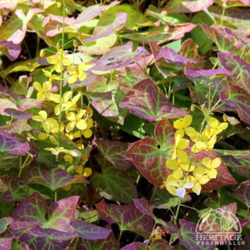

Outdoor Plants
Abbreviation
CN: Common NameBN: Botanical Name
| 1 | 2 | 3 | 4 | 5 |
| 1 | 2 |
CN: Tulip 'Dordogne' , 郁金香 BN: Tulipa-'Dordogne' RHS Gardenia |

CN: Hollyhock, 蜀葵 BN: Alcea-rosea-'Chaters-Double-Mixed' RHS Gardeners' World mr-fothergills sarahraven gardeningknowhow |

CN: Larkspur, 高花翠雀 BN: Delphinium RHS Gardeners' World gardeningknowhow |

CN: Spider Wort BN: Tradescantia x andersoniana-'Isis' RHS davesgarden garden |

CN: Bugloss，篮蓟(jì)属 BN: Echium webbii Gardeners' World plant-world-seeds |

CN: Giant Lily Purple Prince BN: Lilium 'Purple Prince' RHS Gardenia Gardeners' World dutchbulbs shootgardening |
CN: Gladiolus murielae, Abyssinian gladiolus ( syn. acidanthera or callianthus ) BN: Gladiolus murielae RHS Gardenia Gardeners' World gardeningknowhow |

CN: garden anemone, 欧洲银莲花 BN: Anemone coronaria De Caen Group RHS Gardenia Gardeners' World |

CN: Shasta Daisies, 大滨菊 BN: Leucanthemum superbum 'Crazy Daisy' thompson-morgan perennialresource |

CN: tickseed 'Early Sunrise', 大花金鸡菊, 大花波斯菊 BN: Coreopsis grandiflora 'Golden Joy' RHS Gardenia yougarden |

CN: Wood spurge, Mrs Robb's bonnet, 大戟 BN: Euphorbia-amygdaloides-'robbiae' RHS Gardeners' World Gardenia |

CN: Cushion spurge, Many coloured spurge, Wolf's milk, 大戟 BN: Euphorbia polychroma, Euphorbia epithymoides RHS Gardeners' World Gardenia perennials |

CN: Pelargonium, geraniums, 天竺葵 BN: Pelargonium-'Summer-Twist' Yougarden Gardeners' World Gardenia |

CN: Sea Holly, 海滨刺芹 BN: Eryngium-x-zabelii-‘Big-Blue’ RHS Gardeners' World Gardenia |
CN: Nemesia BN: Nemesia RHS Gardeners' World |

CN: Pitcher Plants, 瓶子草 BN: Sarracenia Gardeners' World |

CN: Viola 'Rebecca' BN: Viola-'Rebecca' RHS mr-fothergills perennialresource |

CN: Viola 'Nora' BN: Viola-'Nora' farmyardnurseries |

CN: Viola ‘Etain’ BN: Viola ‘Etain’ RHS Gardeners' World Gardenia perennials |

CN: Viola ‘Victoria’s Blush’, 堇菜属 BN: Viola cornuta ‘Victoria’s Blush’ Gardeners' World perennials |
CN: Chocolate vine, 五叶木通 BN: Akebia quinata RHS Gardeners' World Gardenia |

CN: Digitalis x Pink Panther BN: Digitalis x hybrida 'Pink Panther' primrose yougarden |

CN: African Lily， 百子莲 BN: Agapanthus africanus 'Twister' RHS Gardeners' World Gardenia thompson-morgan |
|

CN: Barrenwort 'Fröhnleiten' BN: Epimedium × perralchicum 'Fröhnleiten' RHS Gardeners' World perennials |

CN: Fawn lily, 猪牙花 BN: Erythronium californicum RHS Gardeners' World Gardenia |
CN: Hosta, 玉簪属 BN: Hosta ‘Barbara Ann’ RHS Gardeners' World perennials |

CN: Bleeding heart, Dicentra spectabilis, lyre flower, lady-in-a-bath BN: Lamprocapnos spectabilis RHS Gardeners' World Gardenia |

CN: Cosmos, Cosmea 'Purity',波斯菊 BN: Cosmos bipinnatus 'Purity' RHS Gardeners' World |

CN: Tulip ‘Queen Of Night’， 郁金香 BN: Tulipa ‘Queen Of Night’ RHS Gardeners' World Gardenia |

CN: Tulip 'Spring Green', 郁金香 BN: Tulipa 'Spring Green' RHS Gardenia sarahraven |

CN: Daisy, 雏菊 BN: Bellis perennis ‘Tasso White’ RHS gardenersworld perennials |

CN: Begonia double White,秋海棠 BN: Begonia RHS Gardeners World jparkers |
CN: 小苍兰属 BN: Freesia RHS Gardenia Sarahraven |

CN: Jasmine, 茉莉 BN: Jasminum RHS gardenersworld gardeningknowhow |

CN: 紫锥花， cone flower, Rudbeckia purpurea BN: Echinacea purpurea RHS GardeningKnowHow GardenDesign |

CN: Tulip 'Ballerina', 郁金香 BN: Tulipa 'Ballerina' RHS sarahraven |

CN: Campsis / 凌霄属 BN: Gardenia |

CN: Tulip, 郁金香 BN: Tulipa saxatilis 'Lilac Wonder' RHS Gardeners' World Gardenia |
|
CN: African lily, 百子莲属 BN: agapanthus RHS Gardenia gardenersworld |

CN: Primula, Primrose, 报春花 BN: Primula 'Blue Lace Mary' RHS Gardeners' World thompson-morgan |

CN: BN: Dahlia hortensis Gardenia |

CN: Dahlia Decorative Lavender Perfection BN: Dahlia 'Lavender Perfection' Gardenia |

CN: Grassnut, triplet lily, Starflower, Wild Hyacinth BN: Triteleia laxa 'Queen Fabiola' RHS Gardenia sarahraven |
|
CN: Chinese mugwort, 艾草 BN: Artemisia argyi |

CN: Chinese bellflower, balloon flower, 桔梗 BN: Platycodon grandiflorus |
CN: Argentinian vervain, purple top, 柳叶马鞭草 BN: Verbena bonariensis |

CN: Poppy 'Ladybird' BN: Papaver commutatum 'Ladybird' |

CN: star of Persia, 红蒜 BN: Allium cristophii RHS gardenersworld crocus |

CN: annual sweet pea, 香豌豆 BN: Lathyrus odoratus |

CN: Spring Starflower BN: Ipheion uniflorum RHS Gardenia gardeningknowhow |

CN: purple cranesbill, 老鹳[guàn]草 BN: Cranesbill Geranium RHS Gardenia gardeningknowhow |
CN: sweet alyssum 'Snowdrift',香雪球 BN: sweet alyssum RHS Gardenia gardenersworld |

CN: winter windflower, 银莲花 BN: Anemone blanda 'Charmer' RHS Gardeners' World Gardenia |

CN: coneflower 'Goldsturm' , 金光菊属 BN: Rudbeckia fulgida var. sullivantii 'Goldsturm' |

CN: black-eyed Susan 'Cherry Brandy', 黑心金光菊, 黑眼苏珊 BN: Rudbeckia hirta 'Cherry Brandy' |

CN: Sweet Coneflower BN: Rudbeckia subtomentosa 'Henry Eilers' |

CN: black-eyed Susan 'Irish Eyes' , Rudbeckia hirta 'Green Eyes' BN: Rudbeckia hirta 'Irish Eyes' |

CN: black-eyed Susan 'Toto' BN: Rudbeckia hirta 'Toto' (Toto Series) |
|
CN: lesser periwinkle,小蔓长春花 BN: Vinca minor Gardeners' World |

CN: Bracken, brake fern BN: Pteridium aquilinum |

CN: lamb's ear BN: Stachys byzantina |
CN: poached egg flower BN: Limnanthes douglasii |
CN: foxglove BN: Digitalis purpurea Link 1 |

CN: Pansy Matrix™ Blue Frost, 大花三色堇, 紫罗兰 BN: Viola × wittrockiana RHS Gardeners' World Gardenia davesgarden |

CN: spider lily 'Isis' BN: Tradescantia Link 1 |
CN: Wood Sorrel BN: Oxalis acetosella wildfooduk |
CN: French marigold BN: Tagetes patula gardenersworld |

CN: common cowslip BN: Primula veris (Pr) Gardeners' World edible-wild-plants |

CN: Solomon's seal BN: Polygonatum × hybridum Saga |

CN: red valerian, 红缬(音‘鞋’)草 BN: Centranthus ruber Gardeners' World Gardenia |

CN: Peruvian lily, 六出花 BN: Alstroemeria Gardenia SarahRaven easytogrowbulbs |

CN: snapdragon, 金鱼草 BN: Antirrhinum majus RHS |

CN: rhododendrons, 杜鹃花 BN: rhododendrons, almanac |

CN: Red-hot poker, 火炬花 BN:Kniphofia /knee-FOE-fee-ah/ Link 1 |

CN: Dahlia BN: Dahlia RHS |

CN: Hosta, 玉簪属 BN: Hosta GardeningKnowHow |
CN: California poppy BN: Eschscholzia californica Gardeners' World |
CN: Grape hyacinth, 葡萄风信子 BN: Muscari armeniacum RHS Gardener's world |

CN: Mexican aster, Garden Cosmos, 波斯菊 BN: Cosmos bipinnatus Gardenia |

CN: Silver Dust BN: Senecio cineraria ‘Silver Dust’ Gardeners' World |

CN: Rakai hebe BN: Hebe rakaiensis Gardenia |
CN: Nasturtium, 旱荷花/旱金莲 BN: Tropaeolum majus GardeningKnowHow |

CN: Glory of the snow BN: chionodoxa Link 1 |
|
CN: perennial cornflower BN: Centaurea montana Gardeners' World |
CN: Fuchsia, 倒挂金钟/灯笼花 BN: Fuchsia Gardeners' World |
CN: clustered fishtail palm, 短穗鱼尾葵 BN: Caryota mitis Tropical |

CN: Iron Cross BN: Oxalis tetraphylla 'Iron Cross' Link 1 |

CN: common broom BN: Cytisus scoparius Wild Life Trusts |

CN: Daffodil, 黄水仙 BN: Narcissus ‘Tête-à-tête’ RHS Gardeners' World Gardenia |
CN: Ivy Leaved Cyclaman， 仙客来 BN: Cyclamen-hederifolium RHS Gardenia Gardeners' World gardeningknowhow |

CN: 风信子 - Hyacinth BN: Hyacinthus orientalis Gardenia |
CN: Saffron Crocus, 藏红花，番红花 BN: Crocus sativus RHS Gardeners' World SoftSchool |

CN: Hellebore, 齿叶铁筷子 BN: Helleborus argutifolius 'Silver Lace' RHS Gardeners' World thompson-morgan |
|
CN: primrose BN: Primula vulgaris Gardeners' World Gardenia |
CN: common snowdrop BN: Galanthus nivalis Gardenia Country Life |
CN: winter windflower, sapphire anemone, Wood anemone BN: Anemone blanda Gardeners' World |

CN: French lavender， Spanish lavender BN: Lavandula stoechas gardenia gardenersworld |

CN: elephant's ears BN: Bergenia gardeningknowhow |

CN: Lupin, 鲁冰花，羽扇豆 BN: Lupinus RHS Gardener's World gardenia |
CN: Monkshood, wolfsbane BN: Aconitum napellus gardenersworld |

CN: Cockscomb,鸡冠花 BN: Celosia Link 1 |
CN: mountain rockcress BN: Arabis caucasica Link 1 |
CN: fairy bellflower BN: Campanula persicifolia gardenia |